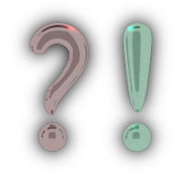
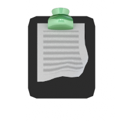
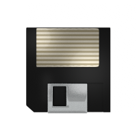

| Button Icon | Description |
|---|---|
| Standard icon for OCR. Follow this button (widget -> main screen -> ocr screen) as a definite path to OCR. | |
| Takes you to the Settings/Preferences screen. On this screen you can customize language, pre-processing, and other OCR parameters. | |
| Tapping on this button opens up Recent History screen where the 5 most recent text that you have OCR’ed are displayed. On touching/clicking any one of the entries, a pop-up selection menu will let you perform actions with this text such as delete the entry, save it, copy it, share it, directly send as sms, google it, etc. | |
|  | A tap on this will open the Help / Information screen where you can find out more about this app, interact with other users of this app, submit a review, etc. |
|  | Copies the OCR'ed text to your phone's clipboard. You can then paste it in any other application. |
| Click this to google the text. Opens the google search page with the query as the recognized text in the default web browser installed on your phone. | |
|  | Click this to save the text as a text file. Creates a text file for you and saves it with extension (.txt). You can find this file at "/mnt/sdcard/OCRNotes/<number>.txt" where <number> is different for each file. This number is displayed as a pop-up message when this icon clicked. |
| Clicking this button will enable you to share the text with other applications installed on your phone such as Dropbox, Gmail, Google Talk, Google+, Twitter, Facebook, Whatsapp, Bluetooth, etc. |